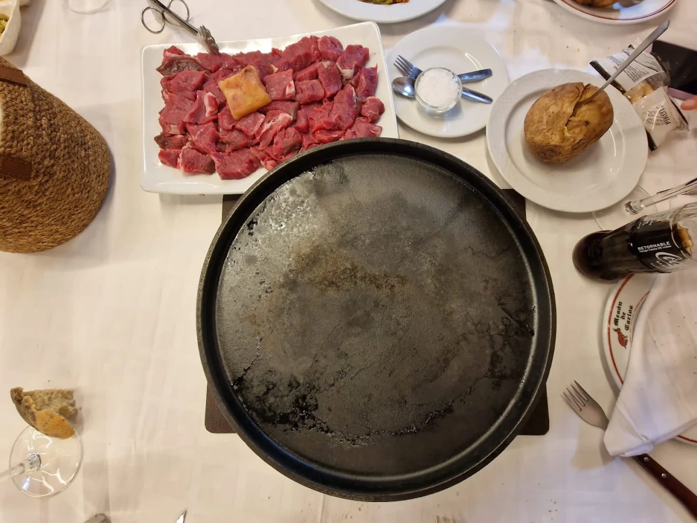
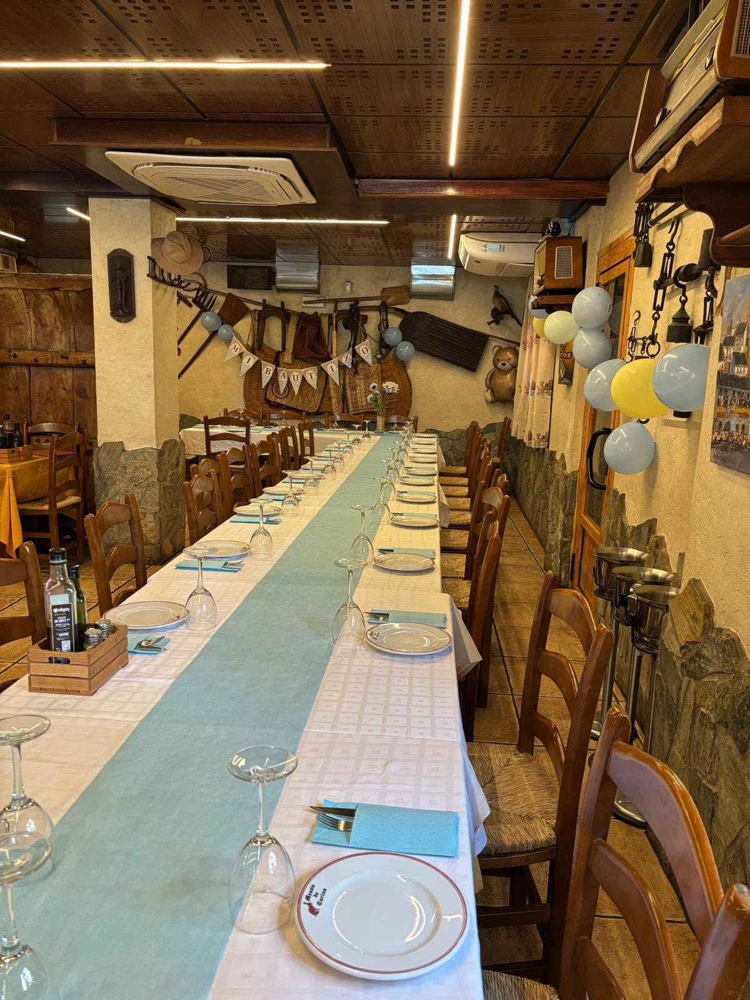
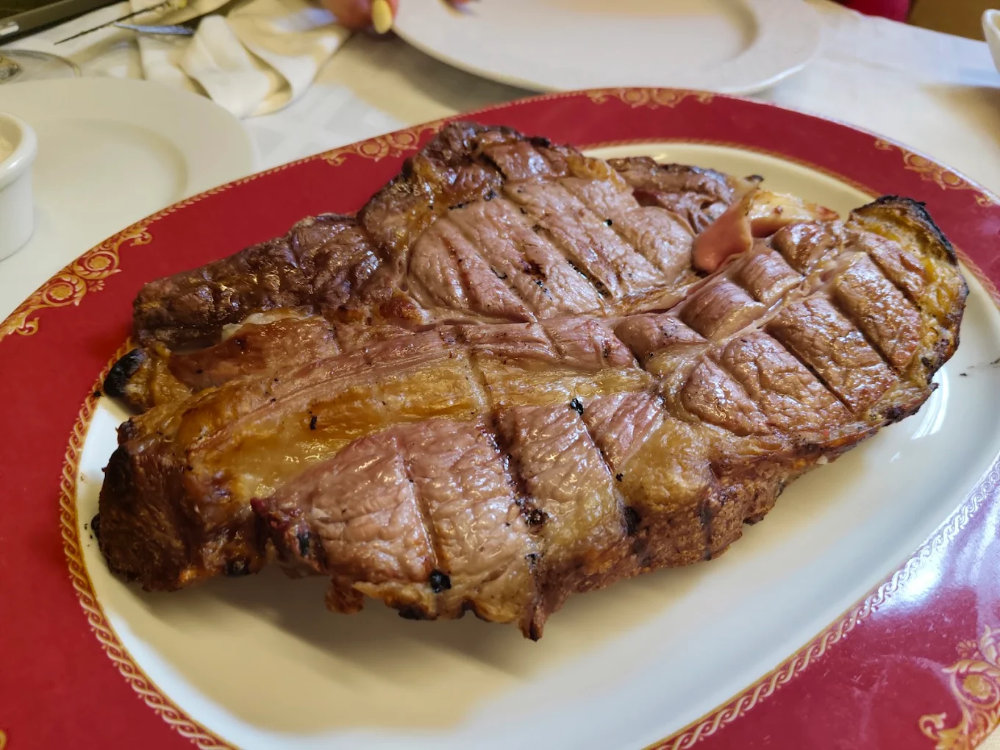
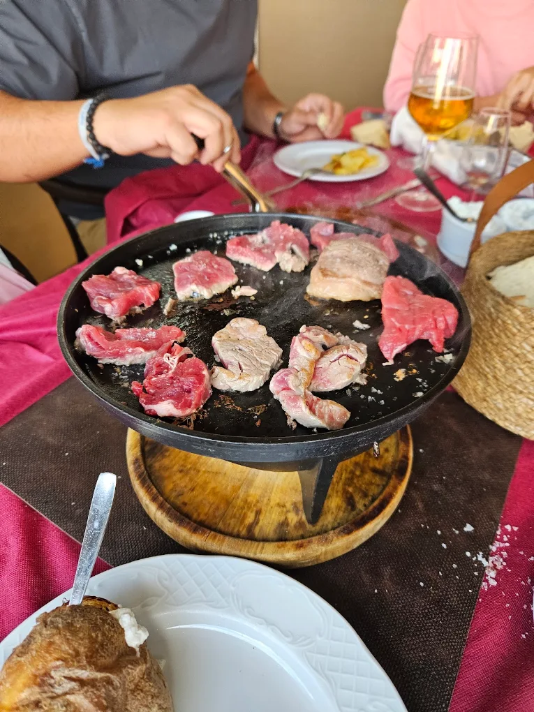
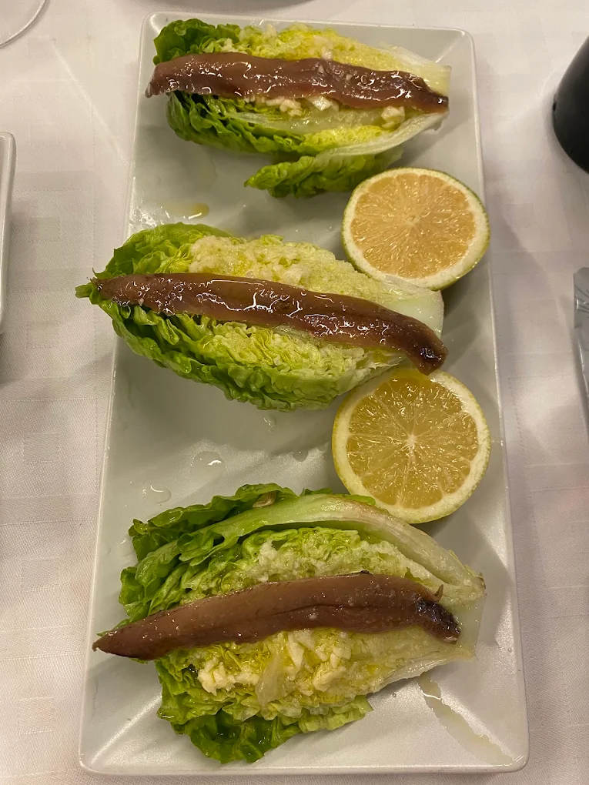
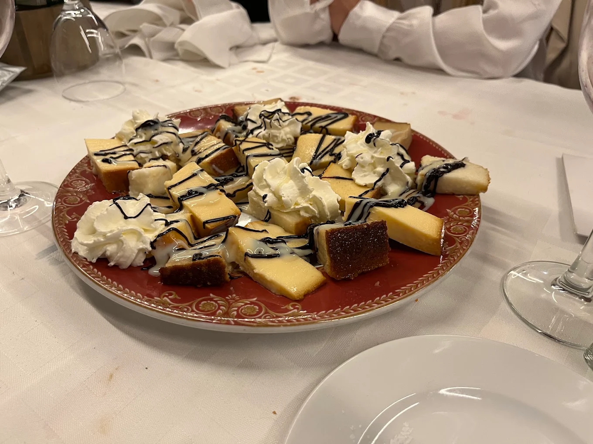

Carnes a la brasa desde hace más de 30 años. Brasa de encina, carne madurada, vino de la tierra.
Mesón de Carlos nace de la pasión por la brasa y por hacer las cosas como se han hecho siempre: con tiempo, con producto de calidad y con el cariño de un negocio familiar. Generación tras generación, hemos mantenido viva la esencia del mesón rural de toda la vida.
Entre madera, piedra y aperos de labranza colgados en las paredes, cada pieza de carne pasa por nuestra parrilla de carbón de encina, donde el fuego lento y el punto justo marcan la diferencia. No buscamos sorprender con artificios: buscamos que cada plato sepa exactamente como debe saber.
Hoy seguimos siendo el mismo mesón de siempre, el que Cártama reconoce como suyo y el que sus visitantes recomiendan nada más probarlo.

Producto seleccionado, brasa de encina y recetas de siempre.
Precios de las carnes por Kg, sujetos a variación de mercado. Consulte nuestra selección de vinos con el equipo de sala.

Todo empieza en la parrilla. Carbón de encina, fuego constante y el oficio de saber leer el punto exacto de cada pieza. Así conseguimos ese sabor que no se puede fingir.
Además, ofrecemos nuestra carne a la piedra: cortes seleccionados que cada comensal cocina a su gusto sobre una piedra volcánica caliente, directamente en su mesa.



Llámanos y te reservamos tu sitio en el mejor asador de Cártama.
Recomendamos reservar con antelación los fines de semana.